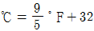
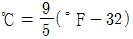
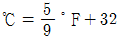
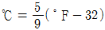
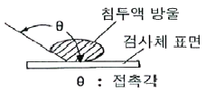
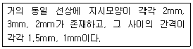

침투비파괴검사기능사 (2012-07-22 기출문제)
1과목: 침투탐상시험법(대략구분)
1. 광자와 물질과의 상호작용에서 전자쌍 생성이 일어나려면 광자는 최소한 얼마의 에너지를 가져야 하는가?
- 1.42 MeV
- 1.22 MeV
- 1.02 MeV
- 0.82 MeV
(정답률: 59%)

2. 표면코일을 사용하는 와전류탐상시험에서 시험코일과 시험체 사이의 상대 거리의 변화에 의해 지시가 변화하는 것을 무엇이라 하는가?
- 공진 효과
- 표피 효과
- 리프트 오프 효과
- 카이저 효과
(정답률: 63%)
3. 방사선투과시험에 대한 설명으로 옳은 것은?
- 방사선투과 방향에 두께차가 있는 시험편인 경우 작은 결함도 비교적 검출이 쉽다.
- 블로홀이나 슬래그혼입 등의 결함은 방사선투과시험으로 검출하기는 매우 어렵다.
- 텅스텐혼입은 두께가 매우 얇은 결함이기 때문에 방사선투과시험으로는 검출이 불가능하다.
- 라미네이션은 결함방향에 영향을 받지 않으므로 결함 검출이 쉽다.
(정답률: 50%)
4. 방사선투과시험(RT)과 초음파탐상시험(UT)을 비교 설명한 내용 중 틀린 것은?(오류 신고가 접수된 문제입니다. 반드시 정답과 해설을 확인하시기 바랍니다.)
- 결함형상 판별에는 RT가 더 유리하다.
- 체적결함 검출에는 UT가 더 유리하다.
- 결함위치 판정에는 UT가 더 유리하다.
- 결함길이 판정에는 RT가 더 유리하다.
(정답률: 38%)
5. 자분탐상시험의 특징을 설명한 것 중 틀린 것은?
- 시험체가 전도체이어야만 측정할 수 있다.
- 표면 및 표면 근처의 결함을 찾을 수 있다.
- 결함모양이 표면에 나타나므로 육안으로 관찰할 수 있다.
- 사용되는 자분은 시험체 표면의 색과 잘 대비를 이루어야 한다.
(정답률: 50%)
6. 누설검사에서 온도가 화씨온도(°F)로 규정되어 섭씨온도(℃)로 환산할 때 사용할 공식으로 옳은 것은?




(정답률: 57%)
7. 침투탐상시험에 대한 설명으로 옳은 것은?
- 침투탐상시험은 내부결함을 검출할 수 없다.
- 침투탐상시험은 시험편의 크기에 큰 제한을 받는다.
- 침투탐상시험은 와전류탐상검사보다 형상에 제한을 더 받는다.
- 침투탐상시험은 자분탐상검사보다 표면 직하의 결함을 찾아내는데 더 확실하고 빠르며 경제적이다.
(정답률: 75%)
8. 와전류탐상시험으로 시험체를 탐상한 경우 검사 결과를 얻기 어려운 경우는?
- 재질 검사
- 피막두께 측정
- 표면직하의 결함 위치
- 내부결함의 깊이와 모양
(정답률: 64%)
9. 강용접부를 통상의 방법으로 초음파탐상검사 할 때 검출이 곤란한 것은?
- 블로우홀
- 홈면 융합불량
- 내부 용입불량
- 횡균열
(정답률: 52%)
10. 침투탐상시험에서 침투액이 가장 잘 침투되려면 그림의 접촉각 θ의 조건은?

- θ = 180°
- 90° ＜ θ ＜ 180°
- θ = 90°
- θ ＜ 90°
(정답률: 77%)
11. 자기탐상검사에서 자화방법에 따라 검출할 수 있는 결함의 방향이 틀린 것은?
- 축통전법 : 축방향의 결함
- 직각통전법 : 축에 직각인 결함
- 전류관통법 : 축에 직각인 결함
- 자속관통법 : 원주방향의 결함
(정답률: 71%)
12. 절대온도(K)를 환산하는 식으로 옳은 것은?
- K = 273 + ℃
- K = 273 - ℃
- K = 473 + ℃
- K = 473 - ℃
(정답률: 77%)
13. 음향방출시험에서 계측시스템에 해당되지 않는 것은?
- 필터
- 증폭기
- AE변환자
- 스트레인 게이지
(정답률: 59%)
14. 초음파탐상검사에 대한 설명으로 틀린 것은?
- 일반적으로 펄스반사법이 적용된다.
- 표피효과가 발생하기도 한다.
- 시험체의 두께 측정이 가능하다.
- 용접부, 주조품 등의 내부 결함검출에 이용된다.
(정답률: 55%)
15. 수세성 형광침투액-속건식현상법에서 건조처리가 되어야 할 시기는?
- 현상처리 전
- 현상처리 후
- 침투처리 전
- 침투처리 후
(정답률: 50%)
16. 다음 중 침투액이 지녀야 할 특성에 관한 설명으로 틀린 것은?
- 인화점이 낮아야 한다.
- 침투성이 좋아야 한다.
- 세척성이 좋아야 한다.
- 부식성이 없어야 한다.
(정답률: 77%)
17. 다음 중 용제제거성 염색침투탐상검사에 관한 설명으로 틀린 것은?
- 조작순서가 다른 검사법에 비해 간단하다.
- 구조물이나 대형 시험체의 부분적인 탐상에 적합하다.
- 매우 거친 탐상면을 가진 시험체의 검사에 적합하다.
- 전원 및 수도설비가 필요없고 휴대형으로 사용할 수 있다.
(정답률: 75%)
18. 침투탐상시험의 무관련지시에 대한 설명으로 틀린것은?
- 무관련지시는 주의깊게 관찰하면 판단이 가능하다.
- 무관련지시는 표면상태에 원인이 있는 경우가 많다.
- 무관련지시라고 확인되지 못한 지시는 불연속지시로 간주한다.
- 시험체에 쇼트 블라스팅을 실시하면 대부분의 경우 무관련지시가 발생한다.
(정답률: 43%)
19. 침투탐상시험시 의사지시가 생기는 원인이 아닌 것은?
- 부적절한 세척을 했을 때
- 현상제에 침투액이 묻었을 때
- 방사선투과시험을 먼저 했을 때
- 외부 물질에 의하여 오염되었을 때
(정답률: 78%)
20. 온도가 20℃로 동일한 경우 점성이 가장 큰 물질은?
- 물
- 케로신
- 에틸알콜
- 에틸렌글리콜
(정답률: 64%)
2과목: 침투탐상관련규격(대략구분)
21. 다음 중 접촉각이 θ 일 때 적심성이 가장 좋은 것은?(오류 신고가 접수된 문제입니다. 반드시 정답과 해설을 확인하시기 바랍니다.)
- θ ＜ 90°
- θ ＞ 90°
- θ = 90°
- θ = 180°
(정답률: 72%)
22. 침투탐상검사에서 침투처리에 관한 설명으로 옳은 것은?
- 수세성 침투탐상의 침투시간은 후유화성 침투탐상의 침투시간보다 일반적으로 길다.
- 침투액과 시험체 온도는 침투시간과는 무관한 관계이다.
- 침투시간은 시험체의 재질과는 무관하다.
- 침투제가 흘러내려서 표면이 침투시간 내에 건조되어도 재시험은 하지 않는다.
(정답률: 54%)
23. 침투탐상시험에서 침투제와 혼합화하여 수세가 가능하도록 하는 물질을 무엇이라 하는가?
- 유화제
- 용제
- 배액제
- 세척제
(정답률: 76%)
24. 다른 비파괴검사와 비교한 침투탐상검사의 장점으로 틀린 것은?
- 거의 모든 재료의 표면에 사용이 용이하다.
- 표면에 존재하는 불연속부의 검출이 가능하다.
- 내부의 결함검출에 용이하고 비용도 적게 든다.
- 고도의 전문적인 기술이 적은 사람이라도 작업할 수 있다.
(정답률: 75%)
25. 다음 중 침투탐상검사의 적심의 정도를 나타내는 공식에 해당되는 것은? (단, 침투액의 표면장력:A, 시험체의 표면장력:B, 고체/액체 계면의 표면장력:C 이다.)
- A-B
- B-C
- C-A
- B-A
(정답률: 41%)
26. 침투탐상시험에서 침투액 세척 또는 제거하는 방법에 대한 설명이 틀린 것은?
- 형광 침투액 세척확인은 자외선등을 이용한다.
- 염색 침투액 세척확인은 흰 마른헝겊으로 닦아 옅은 분홍색이 묻어나면 세척이 완료된 것으로 간주한다.
- 수세성 침투탐상검사의 세척하는 방법으로 수세척을 한다.
- 후유화성 침투탐상의 세척하는 방법으로 용제를 사용한다.
(정답률: 53%)
27. 침투제를 쉽게 관찰할 수 있도록 가시성을 증가시키는 과정을 침투탐상검사에서는 무엇이라 하는가?
- 침투처리
- 세척처리
- 건조처리
- 현상처리
(정답률: 79%)
28. 침투탐상 시험방법 및 침투지시모양의 분류(KS B 0816)에서 현상처리 후에 건조과정이 필요한 탐상방법은 무엇인가?
- FB-W
- FA-D
- FC-S
- FB-D
(정답률: 50%)
29. 침투탐상 시험방법 및 침투지시모양의 분류(KS B 0816)에서 잉여 침투액의 제거방법에 따른 분류 기호에 대한 설명이 틀리게 연결된 것은?
- A : 수세에 의한 방법
- B : 기름베이스 유화제를 사용하는 후유화에 의한 방법
- C : 용제 제거에 의한 방법
- D : 속건식 유화제를 사용하는 후유화에 의한 방법
(정답률: 78%)
30. 침투탐상 시험방법 및 침투지시모양의 분류(KS B 0816)에서 스프레이 노즐을 사용하여 세척 처리할 때의 수압 규정은?
- 175 kPa이하
- 275 kPa이하
- 375 kPa이하
- 475 kPa이하
(정답률: 85%)
31. 비파괴 시험 용어(KS B ⑤50)에서의 용어 설명으로 틀린 것은?
- 기름베이스 유화제 : 물을 첨가하지 않고 사용하는 유화제
- 습식현상제 : 물에 분산시켜 사용하는 백색미분말 상태의 현상제
- 세척제 : 전처리나 제거처리에 사용하는 용제
- 유화시간 : 유화제를 적용 후 현상을 할 때까지의 시간
(정답률: 44%)
32. 항공우주용 기기의 침투탐상 검사방법(KS W 0914) 에서 규정한 침투제의 최소 체류시간은 10분이다. 침지법으로 적용할 때 시험품의 침지시간은 얼마인가?
- 1분 이하
- 3분 이하
- 5분 이하
- 10분 이하
(정답률: 54%)
33. 침투탐상 시험방법 및 침투지시모양의 분류(KS B 0816)에서 규정한 세척 및 제거에 대한 설명 중 옳은 것은?
- 과세척을 방지하기 위해 흐르는 물을 사용한다.
- 염색침투액은 제거처리 후 깨끗한 헝겊으로 닦아 세척을 확인한다.
- 제거처리는 세척액에 침지할 때 효과적이다.
- 세척 효과를 위해 수압은 275kPa 이상으로 한다.
(정답률: 60%)
34. 침투탐상 시험방법 및 침투지시모양의 분류(KS B 0816)에서 시험체의 일부분을 시험하는 경우 전처리의 범위는?
- 시험하는 부분에서 바깥쪽으로 15 mm 넓은 범위
- 시험하는 부분에서 바깥쪽으로 20 mm 넓은 범위
- 시험하는 부분에서 바깥쪽으로 25 mm 넓은 범위
- 시험하는 부분에서 바깥쪽으로 50 mm 넓은 범위
(정답률: 81%)
35. 자외선등에서 적정한 주파수를 넘어 높은 주파수가 발생할 때 생체에 미치는 영향으로 맞는 것은?
- 탈모현상이 일어난다.
- 장기에 영향을 준다.
- 피부를 태우고 눈에 해가 있다.
- 설사 및 구토가 일어난다.
(정답률: 82%)
36. 침투탐상 시험방법 및 침투지시모양의 분류(KS B 0816)에 따라 다음과 같은 경우 침투지시모양의 지시 길이로 옳은 것은?

- 1개의 연속된 지시모양으로 지시길이는 7mm 이다.
- 1개의 연속된 지시모양으로 지시길이는 9.5mm 이다.
- 2개의 지시모양으로 지시길이는 각각 2mm, 6mm이다.
- 2개의 지시모양으로 지시길이는 각각 6.5mm, 6mm이다.
(정답률: 72%)
37. 침투탐상 시험방법 및 침투지시모양의 분류(KS B 0816)에 의하여 침투탐상 시험방법을 선정할 때 고려해야 할 내용과 관계가 먼 것은?
- 시험체에 예상되는 결함의 종류
- 시험하는 날의 날씨
- 시험체의 용도
- 탐상제의 성질
(정답률: 75%)
38. 침투탐상 시험방법 및 침투지시모양의 분류(KS B 0816)에 따른 재시험을 실시하여야 하는 경우는 무엇인가?
- 기준보다 침투시간을 초과하였을 경우
- 기준보다 유화시간을 초과하였을 경우
- 의사지사가 발생하였을 경우
- 실제지시와 의사지사가 혼재되었을 경우
(정답률: 33%)
39. 침투탐상 시험방법 및 침투지시모양의 분류(KS B 0816)에 의한 침투탐상 시험결과를 시험품에 표시하는 방법으로 맞는 것은?
- 전수검사의 경우 합격품에 대해 P로 각인한다.
- 전수검사의 경우 불합격품에 대해 노란색으로 표시한다.
- 전수검사의 경우 합격품에 대해 W로 각인한다.
- 샘플링검사의 경우 합격품에 대해 빨강색으로 표시한다.
(정답률: 84%)
40. 배관 용접부의 비파괴시험 방법(KS B 0888)에서 비파괴시험의 기술 구분이 특별한 경우에 적용하는 B 기준 일 때 침투탐상시험에 의한 합격 판정기준에 대한 설명 중 틀린 것은?
- 선형 침투지시모양은 모두 불합격으로 한다.
- 연속 침투지시모양은 1개의 길이가 8mm 이하를 합격으로 한다.
- 독립 침투지시모양은 1개의 길이가 8mm 이하를 합격으로 한다.
- 분산 침투지시모양에 대하여는 침투지시모양을 분류 및 길이를 규정에 따라 평가하고 연속된 용접 길이 300mm 당의 합계점이 10점 이하인 경우 합격으로 한다.
(정답률: 56%)
3과목: 금속재료일반 및 용접일반(대략구분)
41. 항공 우주용 기기의 침투탐상 검사방법(KS W 0914)에서 사용 중인 수세성 침투액의 수분함유량은 수분이 부피비로 몇 %를 초과할 때부터 불만족한 것으로 규정하는가?
- 1%
- 3%
- 5%
- 10%
(정답률: 38%)
42. 침투탐상 시험방법 및 침투지시모양의 분류(KS B 0816)에 규정된 시험기록 사항 중 조작 조건에서 시험 시의 온도에 대한 설명으로 옳은 것은?
- 시험 장소에서의 침투액의 온도가 16~49℃ 일 때의 온도는 반드시 기록하여야 한다.
- 시험 장소에서 기온이 15℃ 이하 또는 50℃ 이상일 때의 온도는 반드시 기록하여야 한다.
- 시험 장소에서의 기온이 25 ~ 40℃ 일 때의 온도는 반드시 기록하여야 한다.
- 시험 장소에서 기온이 20℃ 이하 또는 45℃ 이상일 때의 온도는 반드시 기록하여야 한다.
(정답률: 80%)
43. 자기변태에 대한 설명으로 옳은 것은?
- 자기적 성질의 변화를 자기변태라 한다.
- 결정격자의 결정구조가 바뀌는 것을 자기변태라 한다.
- 일정한 온도에서 급격히 비연속적으로 일어나는 변태이다.
- 원자배열이 변하여 두 가지 이상의 결정 구조를 갖는 것이 자기변태이다.
(정답률: 60%)
44. 소결 초경질 공구강의 금속 탄화물에 해당되지 않는 것은?
- WC
- TaC
- TiC
- MaC
(정답률: 56%)
45. 기계적 성질 및 유동성이 우수하며, 얇고 복잡한 모래형 주물에 많이 사용되는 알루미늄 합금인 실루민의 공정 온도인 577℃ 에서의 Si의 고용한계는 약 몇 %인가?
- 1.65%
- 2.55%
- 4.33%
- 5.75%
(정답률: 29%)
46. 조성은 Al-4%Cu-2%Ni-1.5%Mg 합금으로 열전도율이 크며 고온에서 기계적 성질이 우수하여 내연기관용 피스톤, 공랭 실린더 헤드 등에 널리 사용되는 알루미늄 합금은?
- Y-합금
- 두랄루민
- 알클래드
- 하이드로날륨
(정답률: 70%)
47. 주철 제조시 탈황제로 가장 적합한 것은?
- C
- Mn
- Fe
- Si
(정답률: 53%)
48. Rimmed강 제조시 Rimming action을 일으키는 가스는?
- H2
- CO
- O2
- CH4
(정답률: 54%)
49. 형상기억 합금에 관한 설명으로 틀린 것은?
- 열탄성형 변태이다.
- 대료적인 합금계는 Sb-Cu이다.
- 센서와 각족 접속판 재료로 사용된다.
- 고온에서의 상은 대부분 규칙 구조를 갖는다.
(정답률: 55%)
50. 경도를 부여하기 위한 재료 중 담금질 온도가 가장 높은 것은?
- STS3
- SM45C
- STD11
- SKH51
(정답률: 39%)
51. 상온에서 910℃까지 존재하는 α-Fe의 원자 배열은?
- 체심입방격자
- 면심입방격자
- 조밀육방격자
- 단순입방격자
(정답률: 42%)
52. 원단면적이 40mm2인 시험편을 인장시험한 후 단면적이 35mm2로 측정되었을 때 이 시험편의 단면 수축율은?
- 4.5%
- 6.5%
- 12.5%
- 21.1%
(정답률: 61%)
53. 실용되는 공업용 황동의 상태도에서 나타나는 상온 조직은?
- α 단상
- β단상
- α 및 α + β상
- β및 β+ α상
(정답률: 66%)
54. Ni-28%Mo-5%Fe 합금으로 염산에 대하여 내식성이 있고, 가공성과 용접성을 겸비한 합금은?
- 퍼멀로이(Permalloy)
- 모넬 메탈(Monel metal)
- 콘스탄탄(Constantan)
- 하스텔로이 비(Hastelloy B)
(정답률: 29%)
55. 금속 침투법에서 고온 산화 방지에 적합한 것으로Al을 침투시키는 것은?
- 세라다이징
- 칼로라이징
- 크로마이징
- 보로나이징
(정답률: 54%)
56. 마그네슘(Mg)의 성질을 설명한 것 중 틀린 것은?
- 용융점은 약 650℃ 정도이다.
- Cu, Al 보다 열전도율은 낮으나 절삭성은 좋다.
- 알칼리에는 부식되나 산이나 염류에는 잘 견딘다.
- 실용 금속 중 가장 가벼운 금속으로 비중이 약 1.74정도이다.
(정답률: 63%)
57. 고온에서 크리프 강조를 가장 높게 하는 원소는?
- V
- Mo
- Cr
- Mg
(정답률: 45%)
58. AW-200 교류용접기에서 2차 무부하 전압이 80V, 아크전압이 20V일 때 용접기의 효율은 얼마인가? (단, 내부손실은 4kW 이다.)
- 45%
- 50%
- 55%
- 60%
(정답률: 35%)
59. 다음 중 산소-아세틸렌 가스용접에서 사용하는 아세틸렌가스에 관한 설명으로 틀린 것은?
- 물보다 아세톤에 용해가 잘 된다.
- 일정온도 이상이 되면 자연 폭발한다.
- 압력을 가하여도 폭발의 위험이 적다.
- 구리와 접촉하면 폭발성 있는 화합물을 생성한다.
(정답률: 61%)
60. 다음 중 전기 저항열에 의해 용접되는 것이 아닌것은?
- 산소-수소 용접
- 점 용접
- 심 용접
- 프로젝션 용접
(정답률: 56%)
임계 에너지는 물질의 종류에 따라 다르며, 일반적으로 물질의 전자 밀도가 높을수록 임계 에너지는 낮아집니다. 예를 들어, 공기의 경우 임계 에너지는 약 33 eV이고, 납의 경우 약 4.9 MeV입니다.
따라서, 보기에서 정답이 "1.02 MeV"인 이유는 이것이 전자쌍 생성을 위한 탄소의 임계 에너지이기 때문입니다. 즉, 고에너지 광자가 탄소와 상호작용하여 전자쌍을 생성하려면 최소한 1.02 MeV의 에너지가 필요합니다.